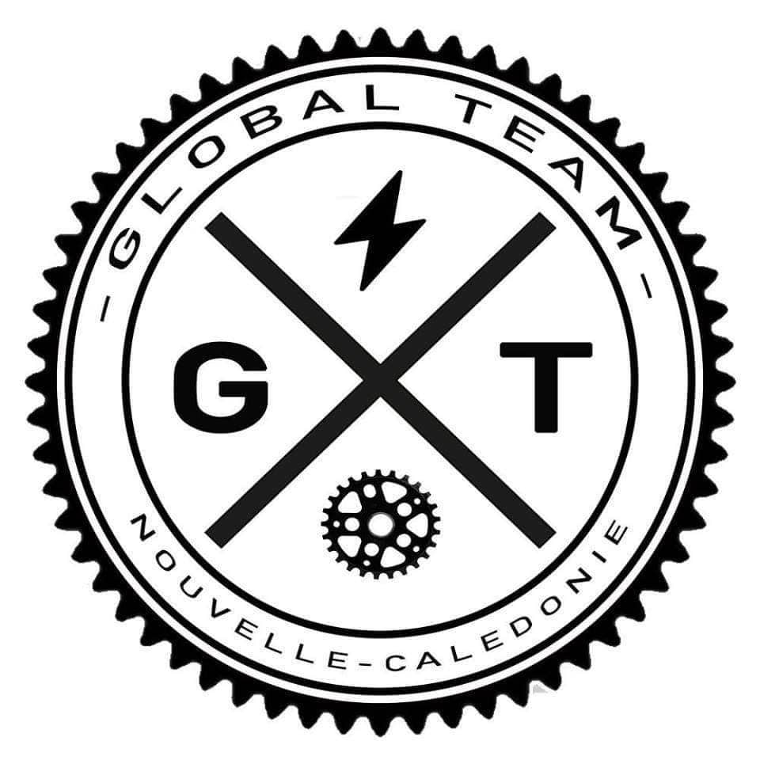
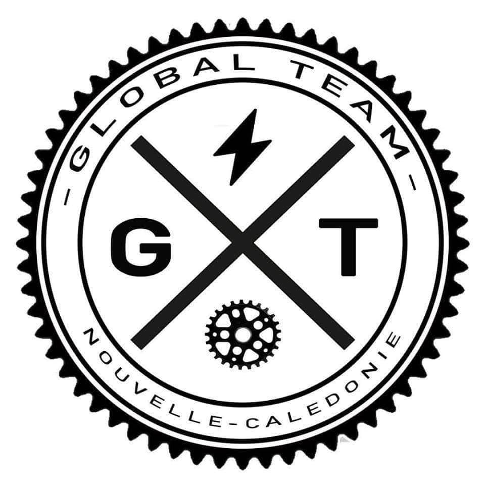

La Global "Team"



Avec la mairie de Nouméa et les Trésors du Sud, nous avions au skate-park de Sainte-Marie qui était une étape d'un circuit découverte fait plusieurs ateliers d'innitiation au travers de question réponses et de démo.
Malgré la pluie et le mauvais temps qui à rendu nos démos difficile, nous avons quand même réussit à présenter notre discipline du mieux que nous avons pu.
Grâce à cet évènnement, nous avons pu montrer au public, aux différentes mairie et autres organismes notre motivation à développer notre discipline, ce qui nous à je pense beaucoup aidé pour la suite.